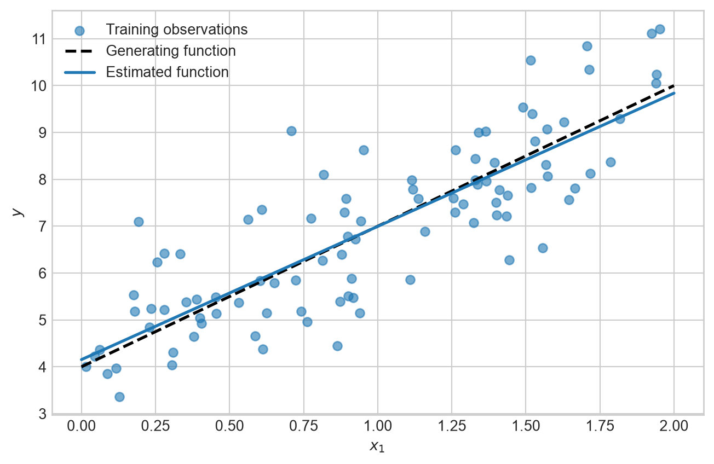
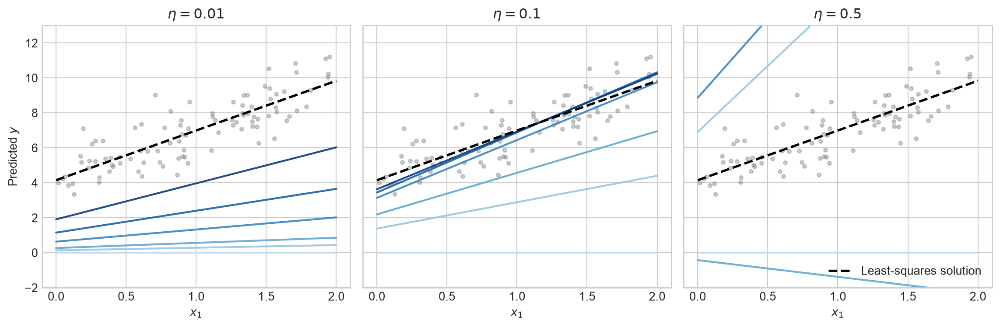
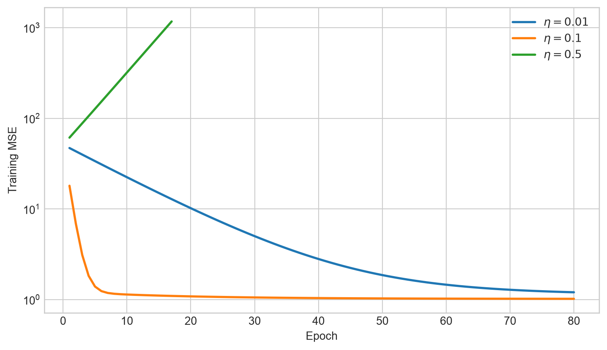
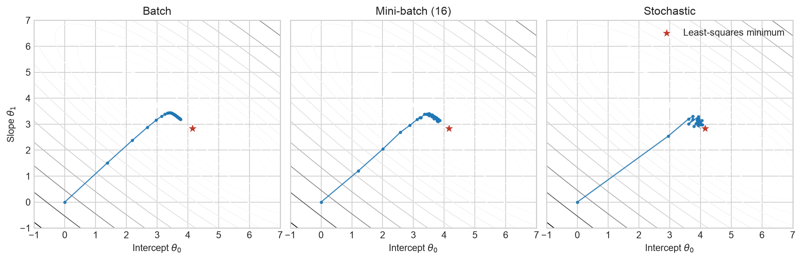
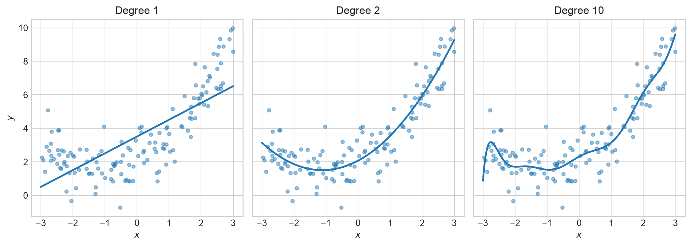
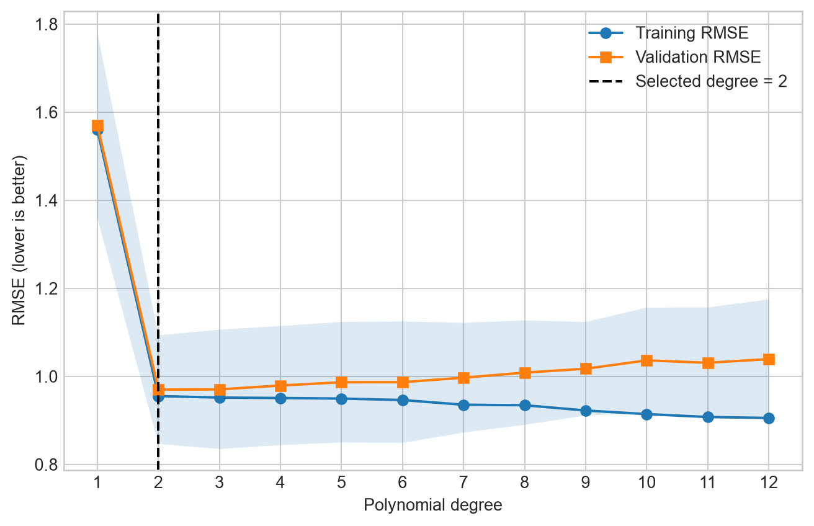
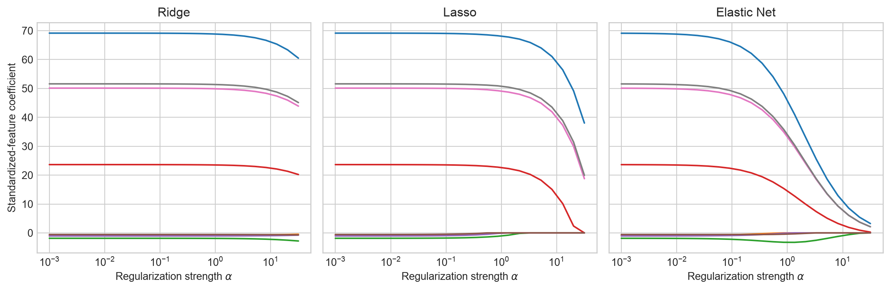
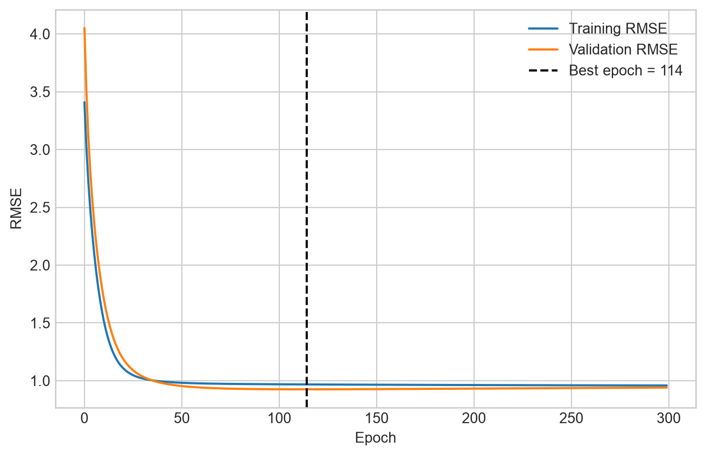
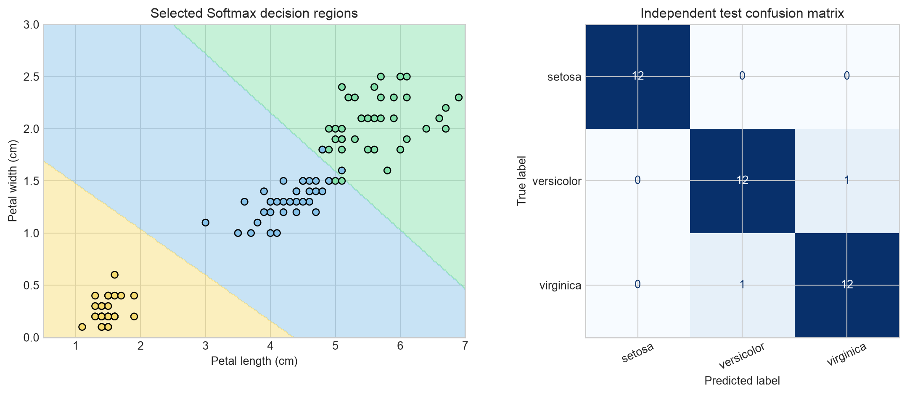

n_linear = 120
X_linear = 2 * chapter04_rng.random((n_linear, 1))
y_linear = (
4
+ 3 * X_linear[:, 0]
+ chapter04_rng.normal(0, 1, n_linear)
)
X_linear_train, X_linear_test, y_linear_train, y_linear_test = (
train_test_split(
X_linear,
y_linear,
test_size=0.20,
random_state=CHAPTER04_SEED,
)
)4 Chapter – Training Models
4.1 Introduction
Chapter 2 treated estimators as components of an end-to-end regression workflow, while Chapter 3 developed an honest classification workflow. This chapter opens the estimator itself. It studies the mathematical functions learned by linear models, the objectives used to estimate their parameters, and the optimization and regularization choices that control their behavior.
The progression is deliberate. Linear Regression introduces a weighted sum and a squared-error objective. Gradient Descent shows how an objective can be minimized iteratively. Polynomial features vary model complexity, while Ridge, Lasso, Elastic Net, and early stopping constrain that complexity. Logistic and Softmax Regression then reuse the same linear scores and optimization ideas for classification.
Four terms must remain distinct:
- parameters are learned during fitting, such as coefficients and intercepts;
- hyperparameters are choices made before fitting, such as polynomial degree or regularization strength;
- a training objective is the quantity minimized to estimate parameters;
- an evaluation metric measures performance on data not used to fit those parameters.
NoteLearning objectives
After completing this chapter, you should be able to:
- express Linear Regression in scalar, vector, and matrix form;
- compare least-squares and iterative parameter estimation;
- explain learning rate, feature scaling, epochs, and convergence;
- use polynomial features to vary model complexity;
- interpret training-validation curves without consulting the test set;
- distinguish Ridge, Lasso, Elastic Net, and early stopping;
- connect linear scores to Logistic and Softmax Regression;
- select classification regularization with cross-validation and evaluate once on test data.
4.2 Linear Regression
4.2.1 A Linear Prediction Function
For an observation with \(n\) predictors, a linear model computes
\[ \widehat{y} = \theta_0 + \theta_1x_1 + \cdots + \theta_nx_n. \]
The intercept \(\theta_0\) is also called the bias term. If an additional constant feature \(x_0=1\) is included, the expression becomes
\[ \widehat{y} = h_{\boldsymbol{\theta}}(\mathbf{x}) = \boldsymbol{\theta}^{\mathsf T}\mathbf{x}. \]
For \(m\) observations, the design matrix \(\mathbf{X}\) has one row per observation and one column per feature, including the constant column when the intercept is represented explicitly. The predictions for all observations are
\[ \widehat{\mathbf{y}} = \mathbf{X}\boldsymbol{\theta}. \]
The residual for observation \(i\) is the difference between its observed and predicted target:
\[ e^{(i)}=y^{(i)}-\widehat{y}^{(i)}. \]
Linear Regression estimates parameters by minimizing the Mean Squared Error:
\[ J(\boldsymbol{\theta}) = \operatorname{MSE}(\boldsymbol{\theta}) = \frac{1}{m} \sum_{i=1}^{m} \left( \boldsymbol{\theta}^{\mathsf T}\mathbf{x}^{(i)}-y^{(i)} \right)^2. \]
Chapter 2 used RMSE as an evaluation metric. Since the square root is strictly increasing on nonnegative values, MSE and RMSE have the same minimizing parameters. MSE is more convenient for differentiation; RMSE is easier to interpret in target units.
4.2.2 A Synthetic Example
The following observations are generated from \(y=4+3x+\varepsilon\), where \(\varepsilon\) is random noise. The generating parameters are known here only because this is a simulation.
The test subset is reserved now and will not be used to choose optimization or model-complexity settings.
4.3 Closed-Form Least Squares
When \(\mathbf{X}^{\mathsf T}\mathbf{X}\) is invertible, the familiar Normal Equation is
\[ \widehat{\boldsymbol{\theta}} = \left(\mathbf{X}^{\mathsf T}\mathbf{X}\right)^{-1} \mathbf{X}^{\mathsf T}\mathbf{y}. \]
Explicitly computing this inverse is unnecessary and can be numerically unstable. Collinear predictors can also make the matrix singular. A more general expression uses the Moore-Penrose pseudoinverse:
\[ \widehat{\boldsymbol{\theta}} = \mathbf{X}^{+}\mathbf{y}. \]
Numerical least-squares routines use matrix factorizations such as Singular Value Decomposition (SVD). np.linalg.lstsq() and Scikit-Learn’s LinearRegression therefore avoid explicitly inverting \(\mathbf{X}^{\mathsf T}\mathbf{X}\).
X_linear_train_bias = np.c_[
np.ones(len(X_linear_train)),
X_linear_train,
]
theta_lstsq, _, _, _ = np.linalg.lstsq(
X_linear_train_bias,
y_linear_train,
rcond=None,
)
linear_regression = LinearRegression()
linear_regression.fit(X_linear_train, y_linear_train)
theta_sklearn = np.r_[
linear_regression.intercept_,
linear_regression.coef_,
]
pd.DataFrame(
{
"Generating value": [4.0, 3.0],
"Least squares": theta_lstsq,
"LinearRegression": theta_sklearn,
},
index=["Intercept", "Slope"],
).round(3)| Generating value | Least squares | LinearRegression | |
|---|---|---|---|
| Intercept | 4.0 | 4.153 | 4.153 |
| Slope | 3.0 | 2.843 | 2.843 |
The estimates need not equal 4 and 3 exactly because the sample contains noise. The two numerical implementations should, however, agree closely.
Show code
X_linear_grid = np.linspace(0, 2, 200).reshape(-1, 1)
fig, ax = plt.subplots(figsize=(8, 5))
ax.scatter(
X_linear_train[:, 0],
y_linear_train,
alpha=0.6,
label="Training observations",
)
ax.plot(
X_linear_grid[:, 0],
4 + 3 * X_linear_grid[:, 0],
"k--",
linewidth=2,
label="Generating function",
)
ax.plot(
X_linear_grid[:, 0],
linear_regression.predict(X_linear_grid),
linewidth=2,
label="Estimated function",
)
ax.set_xlabel("$x_1$")
ax.set_ylabel("$y$")
ax.legend()
plt.show()
Closed-form solvers are effective for moderate numbers of predictors. Their cost grows quickly as the number of features increases, while iterative methods can be preferable for very large or sparse problems.
4.4 Gradient Descent
Gradient Descent minimizes a differentiable objective through repeated updates. The gradient \(\nabla_{\boldsymbol{\theta}}J\) points in the direction of greatest local increase, so the parameters move in the opposite direction:
\[ \boldsymbol{\theta}^{(t+1)} = \boldsymbol{\theta}^{(t)} - \eta \nabla_{\boldsymbol{\theta}}J \left(\boldsymbol{\theta}^{(t)}\right), \]
where \(\eta>0\) is the learning rate.
For the Linear Regression MSE,
\[ \nabla_{\boldsymbol{\theta}}J(\boldsymbol{\theta}) = \frac{2}{m} \mathbf{X}^{\mathsf T} \left( \mathbf{X}\boldsymbol{\theta}-\mathbf{y} \right). \]
The MSE is convex. It has no suboptimal local minima, although rank-deficient data can produce multiple equivalent minimizers. A learning rate that is too small converges slowly; one that is too large can overshoot and diverge.
4.4.1 Batch Gradient Descent
Batch Gradient Descent computes each gradient from all training observations.
def batch_gradient_descent(X, y, learning_rate, n_epochs):
theta = np.zeros(X.shape[1])
costs = []
for _ in range(n_epochs):
residuals = X @ theta - y
gradient = 2 / len(X) * X.T @ residuals
theta -= learning_rate * gradient
costs.append(np.mean(np.square(X @ theta - y)))
return theta, np.array(costs)
theta_batch, batch_costs = batch_gradient_descent(
X_linear_train_bias,
y_linear_train,
learning_rate=0.1,
n_epochs=200,
)
pd.DataFrame(
{
"Least squares": theta_lstsq,
"Batch Gradient Descent": theta_batch,
},
index=["Intercept", "Slope"],
).round(3)| Least squares | Batch Gradient Descent | |
|---|---|---|
| Intercept | 4.153 | 4.150 |
| Slope | 2.843 | 2.845 |
4.4.2 Learning Rate
The next experiment keeps the data and initial parameters fixed and varies only the learning rate. The deliberately large value is stopped if the cost becomes nonfinite or exceeds a safe plotting limit.
learning_rate_histories = {}
for learning_rate in [0.01, 0.1, 0.5]:
theta = np.zeros(X_linear_train_bias.shape[1])
theta_history = [theta.copy()]
cost_history = []
for _ in range(80):
residuals = X_linear_train_bias @ theta - y_linear_train
gradient = (
2 / len(X_linear_train_bias)
* X_linear_train_bias.T
@ residuals
)
theta -= learning_rate * gradient
theta_history.append(theta.copy())
cost = np.mean(
np.square(X_linear_train_bias @ theta - y_linear_train)
)
cost_history.append(cost)
if not np.isfinite(cost) or cost > 1_000:
break
learning_rate_histories[learning_rate] = {
"theta": np.asarray(theta_history),
"cost": np.asarray(cost_history),
}The next figure returns to prediction space. Every panel begins with the same horizontal line from \(\boldsymbol{\theta}^{(0)}=(0,0)\); darker lines represent later updates, and the dashed line is the least-squares solution. Lines that leave the visible range in the large-rate panel indicate overshooting rather than missing values.
Show code
selected_updates = [0, 1, 2, 5, 10, 20]
line_colors = plt.cm.Blues(np.linspace(0.25, 0.95, len(selected_updates)))
fig, axes = plt.subplots(1, 3, figsize=(12, 4), sharex=True, sharey=True)
for ax, (learning_rate, results) in zip(
axes,
learning_rate_histories.items(),
):
theta_history = results["theta"]
available_updates = [
update
for update in selected_updates
if update < len(theta_history)
]
for color_index, update in enumerate(available_updates):
theta = theta_history[update]
line_prediction = theta[0] + theta[1] * X_linear_grid[:, 0]
ax.plot(
X_linear_grid[:, 0],
line_prediction,
color=line_colors[color_index],
linewidth=1.6,
alpha=0.9,
)
ax.plot(
X_linear_grid[:, 0],
theta_lstsq[0] + theta_lstsq[1] * X_linear_grid[:, 0],
"k--",
linewidth=2,
label="Least-squares solution",
)
ax.scatter(
X_linear_train[:, 0],
y_linear_train,
s=10,
alpha=0.35,
color="#6C757D",
)
ax.set_title(fr"$\eta={learning_rate}$")
ax.set_xlabel("$x_1$")
ax.set_ylim(-2, 13)
axes[0].set_ylabel("Predicted $y$")
axes[-1].legend(loc="lower right")
plt.tight_layout()
plt.show()
Show code
fig, ax = plt.subplots(figsize=(9, 5))
for learning_rate, results in learning_rate_histories.items():
cost_history = results["cost"]
ax.plot(
np.arange(1, len(cost_history) + 1),
cost_history,
linewidth=2,
label=fr"$\eta={learning_rate}$",
)
ax.set_xlabel("Epoch")
ax.set_ylabel("Training MSE")
ax.set_yscale("log")
ax.legend()
plt.show()
Feature scaling matters because differently scaled predictors stretch the cost surface. A single learning rate then moves too slowly in some parameter directions or too aggressively in others. This optimization geometry explains the pipeline convention used with SGD in Chapters 2 and 3.
4.4.3 Stochastic and Mini-Batch Gradient Descent
The three common variants differ in how many observations estimate each update:
| Method | Observations per update | Main tradeoff |
|---|---|---|
| Batch | Complete training set | Stable gradients, expensive updates |
| Stochastic | One observation | Cheap noisy updates, supports online learning |
| Mini-batch | Small group | Efficient matrix operations with moderate noise |
An epoch is one pass through the training observations. SGD commonly shuffles observations each epoch, and a learning schedule reduces the learning rate as training progresses. Scikit-Learn exposes these choices through SGDRegressor.
The two-parameter linear example also makes optimizer behavior visible directly. The following implementations start from the same parameters. Mini-batch and SGD shuffle the observations once per epoch and visit each observation exactly once; only the number of observations contributing to each update differs.
def mini_batch_trajectory(X, y, batch_size, n_epochs, learning_rate, seed):
rng = np.random.default_rng(seed)
theta = np.zeros(X.shape[1])
trajectory = [theta.copy()]
for _ in range(n_epochs):
shuffled_indices = rng.permutation(len(X))
for start in range(0, len(X), batch_size):
batch_indices = shuffled_indices[start:start + batch_size]
X_batch = X[batch_indices]
y_batch = y[batch_indices]
gradient = (
2 / len(X_batch)
* X_batch.T
@ (X_batch @ theta - y_batch)
)
theta -= learning_rate * gradient
trajectory.append(theta.copy())
return np.asarray(trajectory)
def stochastic_trajectory(X, y, n_epochs, initial_rate, seed):
rng = np.random.default_rng(seed)
theta = np.zeros(X.shape[1])
trajectory = [theta.copy()]
update = 0
for _ in range(n_epochs):
for index in rng.permutation(len(X)):
X_one = X[index:index + 1]
y_one = y[index:index + 1]
gradient = 2 * X_one.T @ (X_one @ theta - y_one)
learning_rate = initial_rate / (1 + update / 100)
theta -= learning_rate * gradient
trajectory.append(theta.copy())
update += 1
return np.asarray(trajectory)
batch_trajectory = learning_rate_histories[0.1]["theta"][:31]
mini_batch_path = mini_batch_trajectory(
X_linear_train_bias,
y_linear_train,
batch_size=16,
n_epochs=12,
learning_rate=0.05,
seed=CHAPTER04_SEED,
)
stochastic_path = stochastic_trajectory(
X_linear_train_bias,
y_linear_train,
n_epochs=8,
initial_rate=0.03,
seed=CHAPTER04_SEED,
)Show code
theta_0_values = np.linspace(-1, 7, 180)
theta_1_values = np.linspace(-1, 7, 180)
theta_0_grid, theta_1_grid = np.meshgrid(theta_0_values, theta_1_values)
parameter_grid = np.c_[theta_0_grid.ravel(), theta_1_grid.ravel()]
grid_predictions = X_linear_train_bias @ parameter_grid.T
cost_surface = np.mean(
np.square(grid_predictions - y_linear_train[:, np.newaxis]),
axis=0,
).reshape(theta_0_grid.shape)
optimizer_paths = {
"Batch": batch_trajectory,
"Mini-batch (16)": mini_batch_path[::2],
"Stochastic": stochastic_path[::16],
}
fig, axes = plt.subplots(1, 3, figsize=(12, 4), sharex=True, sharey=True)
contour_levels = np.geomspace(1, 80, 16)
for ax, (optimizer_name, path) in zip(axes, optimizer_paths.items()):
ax.contour(
theta_0_grid,
theta_1_grid,
cost_surface,
levels=contour_levels,
cmap="Greys",
linewidths=0.8,
)
ax.plot(
path[:, 0],
path[:, 1],
"o-",
markersize=2.5,
linewidth=1.2,
alpha=0.85,
)
ax.scatter(
theta_lstsq[0],
theta_lstsq[1],
marker="*",
s=150,
color="#C0392B",
edgecolor="white",
label="Least-squares minimum",
zorder=5,
)
ax.set_title(optimizer_name)
ax.set_xlabel(r"Intercept $\theta_0$")
ax.set_xlim(-1, 7)
ax.set_ylim(-1, 7)
axes[0].set_ylabel(r"Slope $\theta_1$")
axes[-1].legend(loc="upper right")
plt.tight_layout()
plt.show()
Batch updates follow a smooth deterministic path. Mini-batch updates introduce moderate variation, while SGD makes many inexpensive, irregular moves and continues to fluctuate near the minimum. The decreasing SGD schedule progressively reduces those fluctuations.
sgd_regression = make_pipeline(
StandardScaler(),
SGDRegressor(
loss="squared_error",
penalty=None,
learning_rate="invscaling",
eta0=0.01,
max_iter=2_000,
tol=1e-6,
random_state=CHAPTER04_SEED,
),
)
sgd_regression.fit(X_linear_train, y_linear_train)
pd.Series(
{
"Least-squares test RMSE": root_mean_squared_error(
y_linear_test,
linear_regression.predict(X_linear_test),
),
"SGD test RMSE": root_mean_squared_error(
y_linear_test,
sgd_regression.predict(X_linear_test),
),
}
).round(3)Least-squares test RMSE 1.018
SGD test RMSE 1.018
dtype: float64This small test comparison confirms the numerical example; it is not a hyperparameter search. No setting is revised after viewing these values.
4.5 Polynomial Regression
A linear estimator can model curved relationships after the predictors are transformed. The following target is quadratic:
\[ y=0.5x^2+x+2+\varepsilon. \]
n_polynomial = 180
X_polynomial = 6 * chapter04_rng.random((n_polynomial, 1)) - 3
y_polynomial = (
0.5 * X_polynomial[:, 0] ** 2
+ X_polynomial[:, 0]
+ 2
+ chapter04_rng.normal(0, 1, n_polynomial)
)
(
X_poly_development,
X_poly_test,
y_poly_development,
y_poly_test,
) = train_test_split(
X_polynomial,
y_polynomial,
test_size=0.20,
random_state=CHAPTER04_SEED,
)PolynomialFeatures(degree=2, include_bias=False) creates \(x\) and \(x^2\). A linear estimator then learns one coefficient for each transformed feature. The prediction is nonlinear in \(x\) but remains linear in its learned parameters.
With several original predictors, polynomial expansion also creates interactions such as \(x_1x_2\). The number of generated features grows quickly with degree, which increases computation and overfitting risk.
polynomial_degrees = [1, 2, 10]
polynomial_models = {
degree: make_pipeline(
PolynomialFeatures(degree=degree, include_bias=False),
StandardScaler(),
LinearRegression(),
).fit(X_poly_development, y_poly_development)
for degree in polynomial_degrees
}Show code
X_poly_grid = np.linspace(-3, 3, 300).reshape(-1, 1)
fig, axes = plt.subplots(1, 3, figsize=(11, 4), sharex=True, sharey=True)
for ax, degree in zip(axes, polynomial_degrees):
ax.scatter(
X_poly_development[:, 0],
y_poly_development,
s=15,
alpha=0.45,
)
ax.plot(
X_poly_grid[:, 0],
polynomial_models[degree].predict(X_poly_grid),
linewidth=2,
)
ax.set_title(f"Degree {degree}")
ax.set_xlabel("$x$")
axes[0].set_ylabel("$y$")
plt.tight_layout()
plt.show()
4.6 Model Complexity
Chapter 2 used learning curves to diagnose model behavior as training size increased. Here we ask a complementary question: how do training and validation errors change as polynomial degree increases?
All learned transformations remain inside each pipeline and each cross-validation fold. The test set remains locked.
chapter04_regression_cv = KFold(
n_splits=5,
shuffle=True,
random_state=CHAPTER04_SEED,
)
degree_candidates = np.arange(1, 13)
complexity_rows = []
for degree in degree_candidates:
polynomial_pipeline = make_pipeline(
PolynomialFeatures(degree=degree, include_bias=False),
StandardScaler(),
LinearRegression(),
)
scores = cross_validate(
polynomial_pipeline,
X_poly_development,
y_poly_development,
scoring="neg_root_mean_squared_error",
cv=chapter04_regression_cv,
return_train_score=True,
)
complexity_rows.append(
{
"Degree": degree,
"Training RMSE": -scores["train_score"].mean(),
"Validation RMSE": -scores["test_score"].mean(),
"Validation SD": scores["test_score"].std(),
}
)
polynomial_complexity = pd.DataFrame(complexity_rows)
selected_polynomial_degree = int(
polynomial_complexity.loc[
polynomial_complexity["Validation RMSE"].idxmin(),
"Degree",
]
)
polynomial_complexity.round(3)| Degree | Training RMSE | Validation RMSE | Validation SD | |
|---|---|---|---|---|
| 0 | 1 | 1.560 | 1.571 | 0.211 |
| 1 | 2 | 0.955 | 0.970 | 0.123 |
| 2 | 3 | 0.952 | 0.970 | 0.136 |
| 3 | 4 | 0.951 | 0.979 | 0.135 |
| 4 | 5 | 0.950 | 0.987 | 0.137 |
| 5 | 6 | 0.946 | 0.987 | 0.138 |
| 6 | 7 | 0.936 | 0.997 | 0.125 |
| 7 | 8 | 0.934 | 1.009 | 0.119 |
| 8 | 9 | 0.923 | 1.017 | 0.106 |
| 9 | 10 | 0.914 | 1.036 | 0.120 |
| 10 | 11 | 0.908 | 1.031 | 0.126 |
| 11 | 12 | 0.906 | 1.039 | 0.135 |
Show code
fig, ax = plt.subplots(figsize=(8, 5))
ax.plot(
polynomial_complexity["Degree"],
polynomial_complexity["Training RMSE"],
marker="o",
label="Training RMSE",
)
ax.plot(
polynomial_complexity["Degree"],
polynomial_complexity["Validation RMSE"],
marker="s",
label="Validation RMSE",
)
ax.fill_between(
polynomial_complexity["Degree"],
polynomial_complexity["Validation RMSE"]
- polynomial_complexity["Validation SD"],
polynomial_complexity["Validation RMSE"]
+ polynomial_complexity["Validation SD"],
alpha=0.15,
)
ax.axvline(
selected_polynomial_degree,
color="black",
linestyle="--",
label=f"Selected degree = {selected_polynomial_degree}",
)
ax.set_xlabel("Polynomial degree")
ax.set_ylabel("RMSE (lower is better)")
ax.set_xticks(degree_candidates)
ax.legend()
plt.show()
Low degree can underfit because both errors remain high. At high degree, training error can continue decreasing while validation error increases, indicating overfitting. Degree is selected by validation RMSE, not by training fit or the test set.
4.7 Regularized Linear Models
Regularization adds a penalty to the training objective. Evaluation still uses unpenalized predictive error: a model is not rewarded merely for having small coefficients.
Except for the intercept, Ridge penalizes squared coefficients:
\[ J_{\text{Ridge}}(\boldsymbol{\theta}) = \operatorname{MSE}(\boldsymbol{\theta}) + \alpha \sum_{j=1}^{n}\theta_j^2. \]
Lasso uses absolute values:
\[ J_{\text{Lasso}}(\boldsymbol{\theta}) = \operatorname{MSE}(\boldsymbol{\theta}) + \alpha \sum_{j=1}^{n}|\theta_j|. \]
Elastic Net combines both penalties. In Scikit-Learn, l1_ratio=1 is Lasso-like and l1_ratio=0 is Ridge-like:
\[ J_{\text{Elastic Net}} = \operatorname{MSE} + \alpha \left[ r\sum_{j=1}^{n}|\theta_j| + \frac{1-r}{2}\sum_{j=1}^{n}\theta_j^2 \right]. \]
Scaling is essential because penalties act directly on coefficient magnitudes. A larger \(\alpha\) means stronger regularization for these regressors.
X_regularization, y_regularization, _ = make_regression(
n_samples=220,
n_features=8,
n_informative=4,
noise=18,
coef=True,
random_state=CHAPTER04_SEED,
)
regularization_alphas = np.logspace(-3, 1.5, 24)
regularization_paths = {"Ridge": [], "Lasso": [], "Elastic Net": []}
for alpha in regularization_alphas:
estimators = {
"Ridge": Ridge(alpha=alpha),
"Lasso": Lasso(alpha=alpha, max_iter=20_000, tol=1e-5),
"Elastic Net": ElasticNet(
alpha=alpha,
l1_ratio=0.5,
max_iter=20_000,
tol=1e-5,
),
}
for model_name, estimator in estimators.items():
model = make_pipeline(StandardScaler(), estimator)
model.fit(X_regularization, y_regularization)
regularization_paths[model_name].append(
model[-1].coef_.copy()
)
regularization_paths = {
name: np.asarray(path)
for name, path in regularization_paths.items()
}Show code
fig, axes = plt.subplots(1, 3, figsize=(12, 4), sharex=True, sharey=True)
for ax, (model_name, coefficient_path) in zip(
axes,
regularization_paths.items(),
):
ax.plot(regularization_alphas, coefficient_path)
ax.set_xscale("log")
ax.set_title(model_name)
ax.set_xlabel(r"Regularization strength $\alpha$")
axes[0].set_ylabel("Standardized-feature coefficient")
plt.tight_layout()
plt.show()
Ridge is often a stable default when many predictors contribute. Lasso can produce a sparse model but may select unpredictably among correlated predictors. Elastic Net retains sparsity while making correlated-predictor behavior less brittle. The appropriate penalty and strength must be selected with validation data.
4.8 Early Stopping
Regularization can also be imposed through the training process. Early stopping monitors validation error during iterative optimization and keeps the model from epochs before validation performance begins to degrade.
The following example fits a high-degree polynomial model one epoch at a time. The feature transformer is fitted only on the fitting subset and then applied to validation data, preserving the leakage-safe convention from Chapters 2 and 3.
(
X_poly_fit,
X_poly_validation,
y_poly_fit,
y_poly_validation,
) = train_test_split(
X_poly_development,
y_poly_development,
test_size=0.25,
random_state=CHAPTER04_SEED,
)
early_stopping_preprocessing = make_pipeline(
PolynomialFeatures(degree=10, include_bias=False),
StandardScaler(),
)
X_poly_fit_prepared = early_stopping_preprocessing.fit_transform(X_poly_fit)
X_poly_validation_prepared = early_stopping_preprocessing.transform(
X_poly_validation
)
iterative_regressor = SGDRegressor(
loss="squared_error",
penalty=None,
learning_rate="constant",
eta0=0.001,
max_iter=1,
tol=None,
warm_start=True,
random_state=CHAPTER04_SEED,
)
training_rmse_by_epoch = []
validation_rmse_by_epoch = []
best_validation_rmse = np.inf
best_epoch = None
best_iterative_regressor = None
for epoch in range(300):
iterative_regressor.fit(X_poly_fit_prepared, y_poly_fit)
training_rmse = root_mean_squared_error(
y_poly_fit,
iterative_regressor.predict(X_poly_fit_prepared),
)
validation_rmse = root_mean_squared_error(
y_poly_validation,
iterative_regressor.predict(X_poly_validation_prepared),
)
training_rmse_by_epoch.append(training_rmse)
validation_rmse_by_epoch.append(validation_rmse)
if validation_rmse < best_validation_rmse:
best_validation_rmse = validation_rmse
best_epoch = epoch
best_iterative_regressor = deepcopy(iterative_regressor)Show code
fig, ax = plt.subplots(figsize=(8, 5))
ax.plot(training_rmse_by_epoch, label="Training RMSE")
ax.plot(validation_rmse_by_epoch, label="Validation RMSE")
ax.axvline(
best_epoch,
color="black",
linestyle="--",
label=f"Best epoch = {best_epoch}",
)
ax.set_xlabel("Epoch")
ax.set_ylabel("RMSE")
ax.legend()
plt.show()
The validation subset guides the stopping decision and is therefore not an independent test set. deepcopy() preserves the fitted coefficients at the best epoch; clone() would copy only estimator configuration and would return an unfitted estimator.
4.9 Logistic Regression
Logistic Regression reuses a linear score but changes the output and training objective. It estimates the probability that an observation belongs to a positive class:
\[ \widehat{p} = \sigma\!\left(\boldsymbol{\theta}^{\mathsf T}\mathbf{x}\right), \qquad \sigma(z)=\frac{1}{1+\exp(-z)}. \]
The sigmoid maps every real-valued score to \((0,1)\). A default threshold of \(0.5\) predicts the positive class when \(\widehat p\geq0.5\). Chapter 3 showed why an operational threshold must instead reflect error costs and be selected without consulting the test set.

4.9.1 Log Loss
For one binary observation, confident correct predictions should have low cost and confident incorrect predictions should have high cost. The average log loss is
\[ J(\boldsymbol{\theta}) = -\frac{1}{m} \sum_{i=1}^{m} \left[ y^{(i)}\log\!\left(\widehat p^{(i)}\right) + \left(1-y^{(i)}\right) \log\!\left(1-\widehat p^{(i)}\right) \right]. \]
Its gradient is
\[ \nabla_{\boldsymbol{\theta}}J(\boldsymbol{\theta}) = \frac{1}{m} \sum_{i=1}^{m} \left( \widehat p^{(i)}-y^{(i)} \right) \mathbf{x}^{(i)}. \]
This objective is convex, although redundant predictors can prevent a unique parameterization. Solvers, scaling, regularization, and stopping criteria determine how the numerical optimum is reached. Scikit-Learn regularizes Logistic Regression by default; its C parameter is the inverse of regularization strength, so smaller C means stronger regularization.
4.10 Binary Decision Boundaries
The Iris dataset contains four measurements and three mutually exclusive species. The first example asks whether a flower is Iris virginica using petal width only. It is an explanatory geometry example, not a model-selection exercise.
iris = load_iris(as_frame=True)
X_iris_binary = iris.data[["petal width (cm)"]].to_numpy()
y_iris_binary = (iris.target == 2).to_numpy()
binary_logistic = LogisticRegression(random_state=CHAPTER04_SEED)
binary_logistic.fit(X_iris_binary, y_iris_binary)LogisticRegression(random_state=42)In a Jupyter environment, please rerun this cell to show the HTML representation or trust the notebook.
On GitHub, the HTML representation is unable to render, please try loading this page with nbviewer.org.
LogisticRegression(random_state=42)
Show code
X_binary_grid = np.linspace(0, 3, 600).reshape(-1, 1)
binary_probabilities = binary_logistic.predict_proba(X_binary_grid)
binary_boundary = X_binary_grid[
binary_probabilities[:, 1] >= 0.5
][0, 0]
fig, ax = plt.subplots(figsize=(8, 4.5))
ax.plot(
X_binary_grid[:, 0],
binary_probabilities[:, 0],
"--",
label="Not Iris virginica",
)
ax.plot(
X_binary_grid[:, 0],
binary_probabilities[:, 1],
label="Iris virginica",
)
ax.axvline(
binary_boundary,
color="black",
linestyle=":",
label="0.5 boundary",
)
ax.scatter(
X_iris_binary[:, 0],
y_iris_binary,
c=y_iris_binary,
cmap="coolwarm",
edgecolor="black",
s=35,
)
ax.set_xlabel("Petal width (cm)")
ax.set_ylabel("Estimated probability")
ax.set_ylim(-0.02, 1.02)
ax.legend()
plt.show()
With petal length and width, the score remains linear in two predictors and the \(0.5\) boundary becomes a line. C=2 below is fixed only to make the geometry visible; it is not claimed to be an evaluated optimum.
X_iris_two = iris.data[
["petal length (cm)", "petal width (cm)"]
].to_numpy()
binary_logistic_2d = make_pipeline(
StandardScaler(),
LogisticRegression(C=2, random_state=CHAPTER04_SEED),
)
binary_logistic_2d.fit(X_iris_two, y_iris_binary)Pipeline(steps=[('standardscaler', StandardScaler()),
('logisticregression',
LogisticRegression(C=2, random_state=42))])In a Jupyter environment, please rerun this cell to show the HTML representation or trust the notebook. On GitHub, the HTML representation is unable to render, please try loading this page with nbviewer.org.
Pipeline(steps=[('standardscaler', StandardScaler()),
('logisticregression',
LogisticRegression(C=2, random_state=42))])StandardScaler()
LogisticRegression(C=2, random_state=42)
Show code
x0, x1 = np.meshgrid(
np.linspace(2.9, 7.0, 300),
np.linspace(0.8, 2.7, 180),
)
X_iris_grid = np.c_[x0.ravel(), x1.ravel()]
virginica_probability = binary_logistic_2d.predict_proba(
X_iris_grid
)[:, 1].reshape(x0.shape)
fig, ax = plt.subplots(figsize=(8, 5))
contour = ax.contourf(
x0,
x1,
virginica_probability,
levels=np.linspace(0, 1, 11),
cmap="coolwarm",
alpha=0.35,
)
ax.contour(
x0,
x1,
virginica_probability,
levels=[0.5],
colors="black",
linewidths=2,
)
ax.scatter(
X_iris_two[:, 0],
X_iris_two[:, 1],
c=y_iris_binary,
cmap="coolwarm",
edgecolor="black",
s=35,
)
ax.set_xlabel("Petal length (cm)")
ax.set_ylabel("Petal width (cm)")
fig.colorbar(contour, ax=ax, label="P(Iris virginica)")
plt.show()
4.11 Softmax Regression
Softmax Regression extends Logistic Regression to \(K\) mutually exclusive classes. It computes one linear score per class:
\[ s_k(\mathbf{x}) = \left(\boldsymbol{\theta}^{(k)}\right)^{\mathsf T}\mathbf{x}. \]
The scores become probabilities through
\[ \widehat p_k = \frac{\exp(s_k)}{\sum_{j=1}^{K}\exp(s_j)}, \qquad \sum_{k=1}^{K}\widehat p_k=1. \]
Implementations evaluate this expression stably by subtracting the largest score before exponentiation. This changes neither the probabilities nor the predicted class but avoids unnecessary overflow.
The predicted class is
\[ \widehat y = \arg\max_k \widehat p_k = \arg\max_k s_k. \]
Softmax is a multiclass, single-label model. It does not solve multilabel tasks in which several classes may be correct simultaneously.
4.11.1 Categorical Cross-Entropy
With one-hot targets \(y_k^{(i)}\), Softmax Regression minimizes
\[ J(\mathbf{\Theta}) = -\frac{1}{m} \sum_{i=1}^{m} \sum_{k=1}^{K} y_k^{(i)}\log\!\left(\widehat p_k^{(i)}\right). \]
Only the term for the observed class contributes for each observation. When \(K=2\), this reduces to binary cross-entropy.
4.12 Selecting and Evaluating Softmax Regression
The geometric examples above used all Iris observations because they were not presented as performance estimates. The final experiment follows the evaluation discipline from Chapter 3: create one stratified split, select C only through cross-validation on the training subset, and evaluate the selected pipeline once on test data.
X_iris_multiclass = iris.data[
["petal length (cm)", "petal width (cm)"]
].to_numpy()
y_iris_multiclass = iris.target.to_numpy()
(
X_iris_train,
X_iris_test,
y_iris_train,
y_iris_test,
) = train_test_split(
X_iris_multiclass,
y_iris_multiclass,
test_size=0.25,
stratify=y_iris_multiclass,
random_state=CHAPTER04_SEED,
)
chapter04_classification_cv = StratifiedKFold(
n_splits=5,
shuffle=True,
random_state=CHAPTER04_SEED,
)softmax_search = GridSearchCV(
estimator=make_pipeline(
StandardScaler(),
LogisticRegression(
solver="lbfgs",
max_iter=2_000,
random_state=CHAPTER04_SEED,
),
),
param_grid={"logisticregression__C": np.logspace(-2, 2, 9)},
scoring="neg_log_loss",
cv=chapter04_classification_cv,
refit=True,
return_train_score=True,
)
softmax_search.fit(X_iris_train, y_iris_train)
softmax_cv_results = (
pd.DataFrame(softmax_search.cv_results_)
.assign(
mean_training_log_loss=lambda frame: -frame["mean_train_score"],
mean_validation_log_loss=lambda frame: -frame["mean_test_score"],
)
[[
"param_logisticregression__C",
"mean_training_log_loss",
"mean_validation_log_loss",
"std_test_score",
]]
.sort_values("mean_validation_log_loss")
)
softmax_cv_results.head().round(4)| param_logisticregression__C | mean_training_log_loss | mean_validation_log_loss | std_test_score | |
|---|---|---|---|---|
| 7 | 31.6228 | 0.0601 | 0.0762 | 0.0594 |
| 8 | 100.0000 | 0.0511 | 0.0762 | 0.0722 |
| 6 | 10.0000 | 0.0770 | 0.0865 | 0.0477 |
| 5 | 3.1623 | 0.1095 | 0.1155 | 0.0372 |
| 4 | 1.0000 | 0.1712 | 0.1750 | 0.0293 |
The selected estimator is fixed before the following cell accesses test labels. Test probabilities and predictions are computed once and reused.
selected_softmax = softmax_search.best_estimator_
softmax_test_probabilities = selected_softmax.predict_proba(X_iris_test)
softmax_test_predictions = selected_softmax.predict(X_iris_test)
softmax_test_results = pd.Series(
{
"Selected C": softmax_search.best_params_[
"logisticregression__C"
],
"Test accuracy": accuracy_score(
y_iris_test,
softmax_test_predictions,
),
"Test log loss": log_loss(
y_iris_test,
softmax_test_probabilities,
labels=selected_softmax.classes_,
),
},
name="Independent test",
)
softmax_test_results.round(4)Selected C 31.6228
Test accuracy 0.9474
Test log loss 0.1183
Name: Independent test, dtype: float64Show code
softmax_cmap = ListedColormap(["#F7DC6F", "#85C1E9", "#82E0AA"])
softmax_x0, softmax_x1 = np.meshgrid(
np.linspace(0.5, 7.0, 300),
np.linspace(0.0, 3.0, 180),
)
softmax_grid = np.c_[softmax_x0.ravel(), softmax_x1.ravel()]
softmax_regions = selected_softmax.predict(softmax_grid).reshape(
softmax_x0.shape
)
fig, axes = plt.subplots(1, 2, figsize=(12, 5))
axes[0].contourf(
softmax_x0,
softmax_x1,
softmax_regions,
cmap=softmax_cmap,
alpha=0.45,
)
axes[0].scatter(
X_iris_train[:, 0],
X_iris_train[:, 1],
c=y_iris_train,
cmap=softmax_cmap,
edgecolor="black",
s=35,
)
axes[0].set_xlabel("Petal length (cm)")
axes[0].set_ylabel("Petal width (cm)")
axes[0].set_title("Selected Softmax decision regions")
ConfusionMatrixDisplay.from_predictions(
y_iris_test,
softmax_test_predictions,
labels=selected_softmax.classes_,
display_labels=iris.target_names,
cmap="Blues",
colorbar=False,
ax=axes[1],
)
axes[1].set_title("Independent test confusion matrix")
axes[1].tick_params(axis="x", rotation=25)
plt.tight_layout()
plt.show()
Accuracy evaluates the final class decisions, while log loss evaluates the quality of the probability assigned to the observed class. Neither metric was used after test evaluation to revise C or any other setting.
4.13 Chapter Summary
- Linear Regression predicts with a weighted sum and estimates parameters by minimizing squared error.
- Stable least-squares solvers use factorizations or a pseudoinverse rather than explicitly inverting \(\mathbf{X}^{\mathsf T}\mathbf{X}\).
- Gradient Descent depends on learning rate, scaling, update size, and stopping criteria.
- Polynomial features change input representation while the estimator remains linear in its parameters.
- Training-validation curves diagnose complexity; the test set does not participate in that diagnosis.
- Ridge shrinks coefficients with L2 regularization; Lasso uses L1 and can create sparse models; Elastic Net combines both.
- Early stopping regularizes an iterative model by retaining an earlier fitted state selected on validation data.
- Logistic Regression maps a linear score through the sigmoid and minimizes binary cross-entropy.
- Softmax Regression learns one score per mutually exclusive class and minimizes categorical cross-entropy.
- Classification regularization and thresholds are development choices; final test data must remain independent.
4.14 Exercises
- Add a predictor that is an exact copy of \(x\) to the synthetic linear dataset. Compare
np.linalg.lstsq()with an explicit Normal Equation inverse and explain the result. - Standardize a two-feature dataset with strongly different scales. Plot Batch Gradient Descent trajectories before and after scaling.
- Implement Mini-batch Gradient Descent with shuffled batches and compare its cost history with Batch and Stochastic Gradient Descent.
- Extend the polynomial complexity curve to degree 20. Identify where numerical instability or overfitting begins and justify the diagnosis using validation, not test, RMSE.
- Use matched cross-validation folds to select Ridge, Lasso, and Elastic Net hyperparameters. Compare validation RMSE and the number of nonzero coefficients.
- Add patience to the manual early-stopping loop so fitting ends after several epochs without meaningful validation improvement.
- Compare the selected Softmax pipeline with an unscaled pipeline using the same folds. Explain changes in convergence and validation log loss.
- Select a binary Iris threshold for a stated precision or recall objective by following the dedicated-validation protocol from Chapter 3.
- Create a multiclass target with string labels and verify that
classes_,predict_proba(), andpredict()preserve the class mapping. - Explain why minimizing log loss can improve probability estimates without guaranteeing that a fixed 0.5 decision threshold is appropriate for deployment.